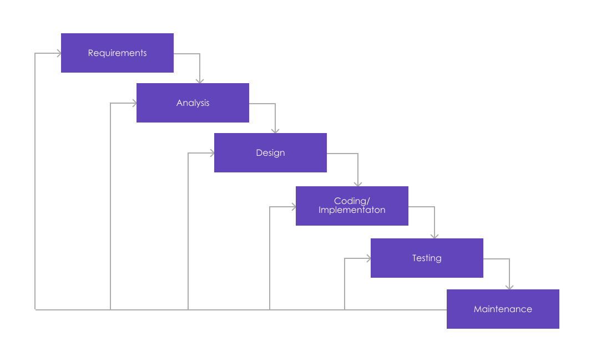
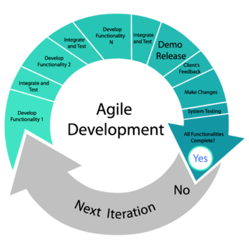

Software Development Methodologies

Overview:
- Introduction
- Waterfall
- Agile
- Scrum
- Kanban
- Conclusion
Watefall:
Linear and sequential approach to software development
Each phase must be completed before the next phase begins
Watefall:
Agile:
- Flexibility and iterative approach
- Collaboration and continuous improvement
Focuses on delivering working software in short iterations
Emphasizes collaboration, customer feedback, and continuous improvement
Changes can be made throughout the development process
Teams respond quickly to feedback
Agile:
-

Scrum:
- Framework within Agile
Provides a structured way to develop software
Divides the work into smaller time-boxed iterations called sprints
Teams have specific roles:
Scrum Master, Product Owner, and Development Team
Daily stand-up meetings and sprint reviews are essential
Kanban:
- Visual management tool
Visualize the Workflow
Limit Work in Progress (WIP)
Manage Flow
Make Process Policies Explicit
Implement Feedback Loops
Improve Collaboratively, Evolve Experimentally
Conclusion:
Each software development methodology has its strengths and weaknesses, and the choice of methodology depends on the nature of the project and the team involved. It's essential to understand the key principles of each methodology to select the one that best suits your project's requirements